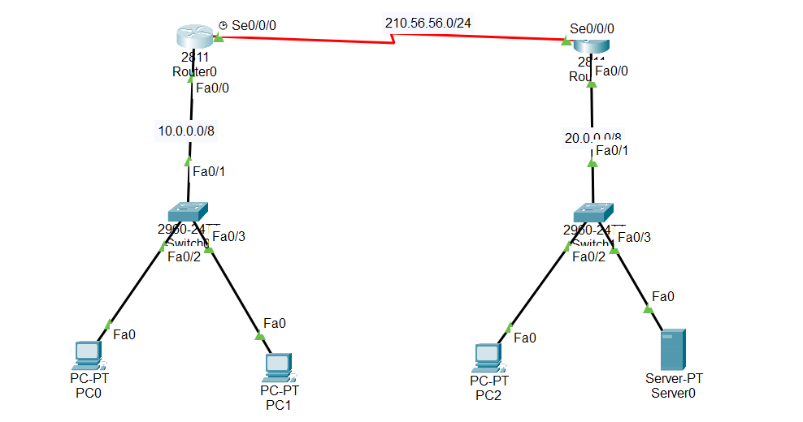

Steps:
Router0:
Router(config)#int s 0/0/0
Router(config-if)#ip add 210.56.56.1 255.255.255.0
Router(config-if)#no sh
Router(config-if)#exit
Router(config)#int f 0/0
Router(config-if)#ip add 10.0.0.1 255.0.0.0
Router(config-if)#no sh
Router(config-if)#exit
Router(config)#router rip
Router(config-router)#network 210.56.56.0
Router(config-router)#network 10.0.0.0
Router(config-router)#exit
Router1:
Router(config)#int s 0/0/0
Router(config-if)#ip add 210.56.56.2 255.255.255.0
Router(config-if)#no sh
Router(config-if)#exit
Router(config)#int f 0/0
Router(config-if)#ip add 20.0.0.1 255.0.0.0
Router(config-if)#no sh
Router(config-if)#exit
Router(config)#router rip
Router(config-router)#network 20.0.0.0
Router(config-router)#network 210.56.56.0
Router(config-router)#exit
Router0 ACL rule set:
Router(config)#ip access-list extended pc-web-block
Router(config-ext-nacl)#deny tcp host 10.0.0.2 host 20.0.0.3 eq www
Router(config-ext-nacl)#permit tcp any any
Router(config-ext-nacl)#exit
Router(config)#int f 0/0
Router(config-if)#ip access-group pc-web-block in
Web Test:
PC0 browser http://20.0.0.3 (Not responding/time out),
But PC0 ping 20.0.0.3 is OK.